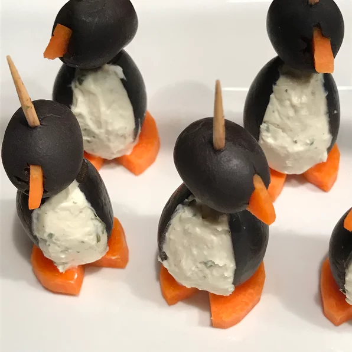

back to home
Cream Cheese Penguins

Penguins made with black olives, carrots and cream cheese. wow!!!!
Ingredients
- 18 jumbo black olives, pitted
- 1 (8 ounce) package cream cheese, softened
- 18 small black olives
- 1 carrot
Steps
- Cut a slit from top to bottom, lengthwise, into the side of each jumbo olive.
Carefully insert about 1 teaspoon of cream cheese into each olive.
Slice the carrot into eighteen 1/4 inch thick rounds;
cut a small notch out of each carrot slice to form feet.
Save the cut out piece and press into center of small olive to form the beak
If necessary cut a small slit into each olive before inserting the beak.
- Set a big olive, large hole side down, onto a carrot slice.
Then, set a small olive onto the large olive, adjusting so that the beak,
cream cheese chest and notch in the carrot slice line up.
Secure with a toothpick.